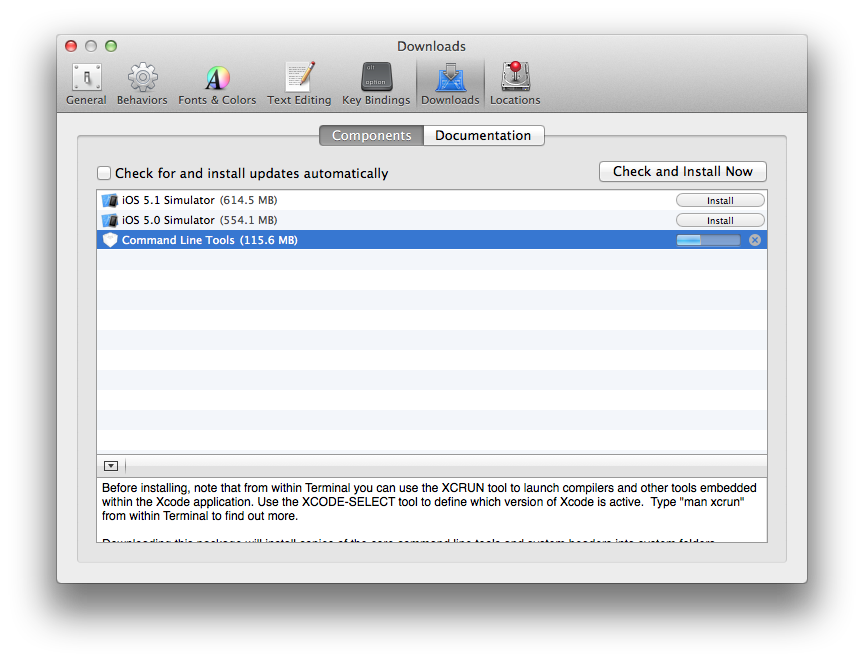

About Author

Rhio Kim
blog: http://rhio.tistory.com
twitter: @rhiokim
github: rhiokim
자바스크립트를 좋아하는 인간입니다.
- Arduino
- Node.js
- HCI
About this Article
Date Released:
Friday, November 30 2012 1:33 AM하루프레스 설치 요구 사항 및 설치
지난 10월 초 하루프레스 v0.9 버젼이 릴리즈 되고 나서 많은 분들이 하루프레스를 사용하고 있다.
오픈 소스이니 만큼 혼자서 많은 환경에서 테스트하기에는 쉽지가 않은 일이기에 작은 의견이라도 트위터나 Github 이슈트래커를 통해 주신분들께 깊은 감사를 전합니다.
특히 Ubutun 와 Mac OS X 에 깔끔한 설치를 위한 h-get 을 구현해 준 @andrwj 님에게 큰 감사함을 전합니다.
h-get 은 몇가지 테스트를 거쳐 v0.9.3 에서 제공할 예정입니다. (현 v0.9.1)
많은 피드백 중 맥을 사용하고 있지만 쉘에 익숙하지 않고 Command line tool 을 설치하지 않은 사용자, Node 를 패키지로 설치하거나 소스 빌드한 분들의 권한 문제, 설치 시 필요한 모듈 빌드 문제와 의존성 문제 등으로 설치가 원할하지 않아 고생했다는 이야기가 가장 많았다.
그래서 이번 포스팅을 통해 관련한 많은 이슈들을 정리하고 설치 방법을 가이드하고자 한다.
하루프레스 설치 요구사항
지원 운영체제
Window 7- Mac OS X 10.6 more
- Linux
- Ubuntu 12.04 LTS
- Ubuntu 10.04
CentOS 5.5 64bit
설치에 필요한 요구사항
Git
Ubuntu
$ apt-get install gitMac OS X
$ brew install gitgit 에 대한 자세한 사항은 공식 사이트 에서 확인하세요.
Node.js
노드의 경우 Github 저장소를 이용한 소스 빌드, 공식 사이트에서 pkg 파일을 다운로드 받아서 설치를 한 경우 노드의 권한이 user 권한이 아닌 시스템 권한을 갖기 때문에 하루프레스 설치와 동작에 있어 root 권한으로 실행해야 하는 불편함을 갖게 된다.
이런 경우 하루프레스를 저장소로 부터 clone 받은 직후 하루프레스 폴더의 owner 과 group 를 본인의 유저 권한에 맞게 설정을 변경해 주어야 한다.
$ git clone https://github.com/rhiokim/haroopress myblog.com
$ sudo chown -R <owner> myblog.com (<owner> 을 본인의 값으로 설정)
$ sudo chgrp -R <group> myblog.com (<group> 을 본인의 그룹으로 설정)
nvm(Node Version Manager) (권장)
$ git clone git://github.com/creationix/nvm.git ~/nvm $ . ~/nvm/nvm.sh # Bash Profile 에 nvm 명령을 등록 $ echo ". ~/nvm/nvm.sh" >> ~/.bashrc # v0.8.15 버젼 설치 $ nvm install 0.8.15 # 기본 사용 버젼을 지정 (이렇게 하지 않으면 쉘을 띄울때 마다 리셋된다.) $ nvm alias default 0.8.15- nvm 에 대한 자세한 사항은 저장소 에서 확인하세요.
커멘드라인 도구
- Ubuntu
$ sudo apt-get make curl g++
- Mac OS X
맥의 경우에는 아래 이미지에서 보이듯이 Command line tools(gcc, make, g++ 등) 를 설치해 주어야 합니다.
실행 방법 XCode 실행 > Preferences > Downloads > Command Line Tools > install 
java
하루프레스 v0.9.2 에서 Java 의존성이 없어졌습니다.
Ubuntu
$ sudo apt-get default-jre
Mac OS X
v0.9.2 에서 자바 의존성이 제거되었습니다.
맥의 경우 JRE(Java Runtime Enviornment) 가 기본적으로 설치되어 있으나 최신 Mac OS 에서는 제외된다는 이야기가 있어, 설치되어 있지 않은 경우 Java SE Runtime Environment 7 Downloads 에서 다운로드 받아 설치하면 된다.
자세한 설치 방법은 오라클 공식 메뉴얼 JRE 7 Installation for Mac OS X 을 확인하세요.
python (다운로드)
하루프레스 v0.9.3 에서 python 의존성이 없어졌습니다..
Ubuntu
$ sudo apt-get python
Mac OS X
$ brew install python
- Mac OS X 에서 brew 가 없거나 패키지 설치를 권장합니다.
NPM 모듈 의존성
- node-gyp
- node-gyp 란 Node.js 용 네이티브 애드온을 컴파일링하기 위한 크로스 플랫폼 커멘드라인 툴입니다.
- 하루프레스에서 node-gyp 는 설치 과정 중 네이티브 모듈을 크로스 컴파일링하기 위해서 사용됩니다. 그래서 설치 전 필수로 설치되어 있어야 합니다.
$ npm install node-gyp -g
- node-gyp 에 대한 자세한 사항은 저장소 에서 확인하세요.
커뮤니티 메뉴얼
하루프레스를 사용해 본 경험들을 찾는대로 아래 링크에 모아두고 있습니다.
주말마다 코딩을하는 날 보고 평생애인이 했던 말
주말이 아니면 사실 코딩할 시간이 넉넉치 않기 때문에 늘 주말에 일찍 일어나 코딩을 하곤 한다. 그래서 주말마다 늦잠자는 평생 애인님께 무한한 감사를 한다.
그런데 오늘은 일찍 일어나더니 나에게 주말마다 뭘 그렇게 하냐며...
애인: 맨날 뭘 그렇게 해?
리오: 블로그 엔진 만들어
애인: 그걸 왜 해?
…
리오: 지금은 샤넬이 아니지만 열심히 만들면 샤넬처럼 가치가 있는 블로그 엔진이 될꺼니까.
애인: 놀구 있네. 계속 놀아. zz.zZ.Zzz